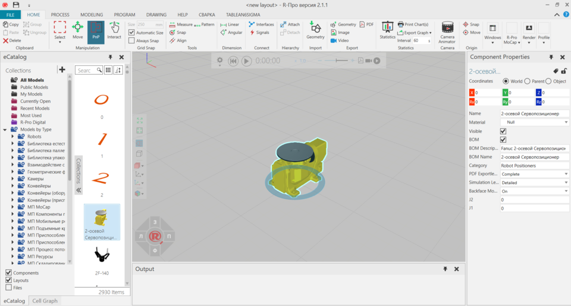

The Layout view allows you to build layouts in the 3D world using components.

To access the Layout view:
The Layout view shows, by default, the following panels:
The context of the Layout view is layout configuration.
You can:
By default, the following commands are shown in the Ribbon when you click the Home tab.
| Name | Description |
| Align | Aligns a selected component using two points. Additional options are
displayed in a task pane.
Settings Snap Type |
| Always Snap | Turns on/off the automatic snapping of a selected component along an axis or plane at intervals when using the manipulator. |
| Attach | Attaches a selected component to a node of another component, thereby forming a new parent-child hierarchy in the layout. |
| Automatic Size | Turns on/off the automatic calculation of intervals for snapping a selected component along an axis or plane when using the manipulator. |
|
Camera Animator |
Defines camera movements for active layout in 3D world. Additional options are displayed in a task pane. Simulation Time Relative Time View Time Arc + Trashcan |
| Copy | Copies the current selection to the clipboard. |
| Delete | Deletes the current selection. |
| Detach | Detaches a selected component from a node of another component, thereby removing a parent-child hierarchy from the layout. |
|
Export Graph |
Exports all charts in Statistics dashboard to either a CSV or Excel file. Export to Excel Export to CSV |
| (Import) Geometry | Imports the geometry of a supported file. Additional options are displayed in a task pane, see Import Model Settings. |
| (Export) Geometry | Exports the geometry of all or selected components to a new supported file. |
| Group | Adds selected components to a new group. |
| Image | Allows the 3D world view within a border to be captured, and then
exported as a new file or copied to the clipboard. Additional options are
displayed in a task pane.
Resolution File Format Render mode Export |
| Interact | Allows the pointer to jog joints and other interactive properties of components in one or more degrees of freedom in the 3D world. |
|
Interfaces |
Allows components to be remotely connected in the 3D world using abstract interfaces. Additional options are displayed in a task pane. Component Interface Connections Display Network Map Show Connection Lines Show Non-abstract
Interfaces Note: By default, interface editors (nodes) for components are not displayed unless they have two matching interfaces with the selection. You can change this by editing "interfacesNodeVisibilityThreshold" in the app.config file. |
|
Interval |
Defines the global sampling rate for reporting Statistics behavior properties. This includes cumulative, interval and state-based statistics. The default is to report data every 60 seconds during simulation. |
| Measure | Measures the distance and/or angle between two points in 3D world.
Additional options are displayed in a task pane.
Mode Settings Snap Type Tip: The results of a measurement are sent to Output panel. |
| (Manipulation) Move | Allows a selected component to be moved along an axis or plane, rotated around an axis, and snapped and aligned to a point in 3D world. |
| (Origin) Move | Allows the point of origin in active component to be moved in 3D
world. Additional options are displayed in a task pane.
Apply |
| Paste | Adds the contents of clipboard to active area or field of workspace depending on data type. |
| Record simulation as a 3D PDF. | |
| PnP | Allows the pointer to plug selected components into other components
to form physical connections.
Note: A selected component must have an interface, otherwise it cannot be plugged into any component. Other components must have compatible interfaces, otherwise selected components will not plug into them. Components that are plugged into one another may or may not be attached to one another. |
|
Print Chart(s) |
Prints all or selected charts in Statistics dashboard. |
| Restore Windows | Restores the workspace of current view to its default setting. |
| Select | Allows for direct and indirect selection of components in the 3D world
using listed commands.
Rectangular
selection Free-form selection Select all Invert selection |
| Show | Displays a list of panels that can be shown/hidden from the current view of workspace. |
|
Signals |
Allows signals of components and I/O of robot to be connected to one another in 3D world. Additional options are displayed in a task pane. Component Signal Connections Tip: For inputs and outputs of robot, we recommend using signals 100 onward for new signal connections and actions. This helps avoid conflict with predefined actions for robots. Display Network Map Show Connection Lines Enable Signal
Toggling |
| Size | Defines the interval for snapping a selected object along an axis or plane when using the manipulator. |
| (Origin) Snap | Allows the point of origin in selected component to be snapped to a
location in 3D world by using one to three points. Additional options are
displayed in a task pane.
Mode Settings Snap Type Apply |
| (Tools) Snap | Allows a selected component to be snapped to a location in 3D world by
using one to three points. Additional options are displayed in a task
pane.
Mode Settings Snap Type |
| Statistics | Launches a dashboard for configuring charts and reporting data collected during a simulation. |
| Ungroup | Removes selected components from one or more groups, and then deletes those groups. |
| Video | Records simulation as a video. |